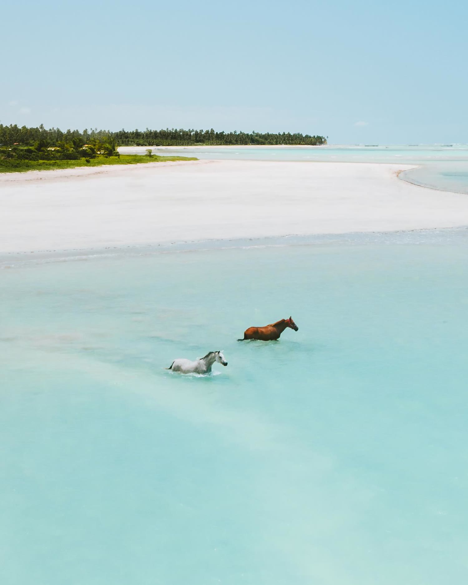
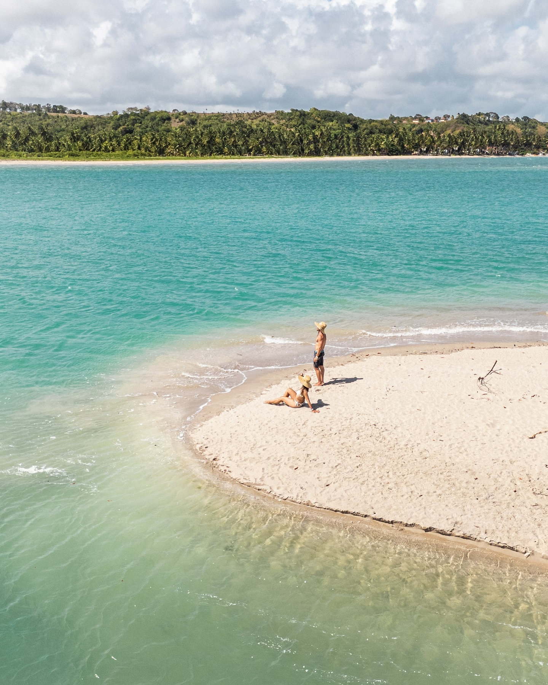
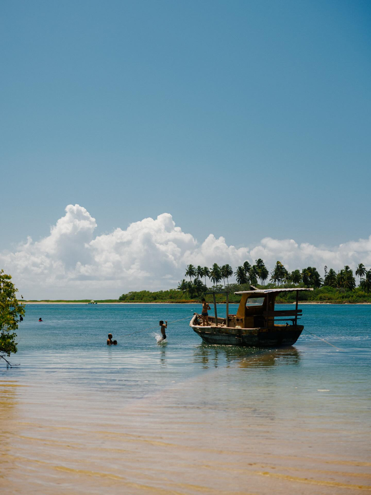
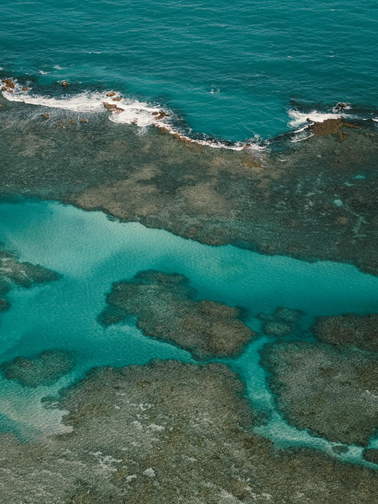
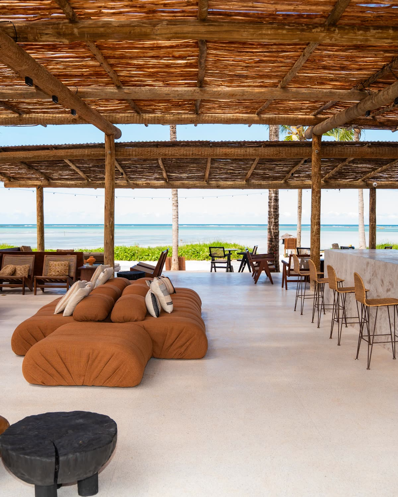
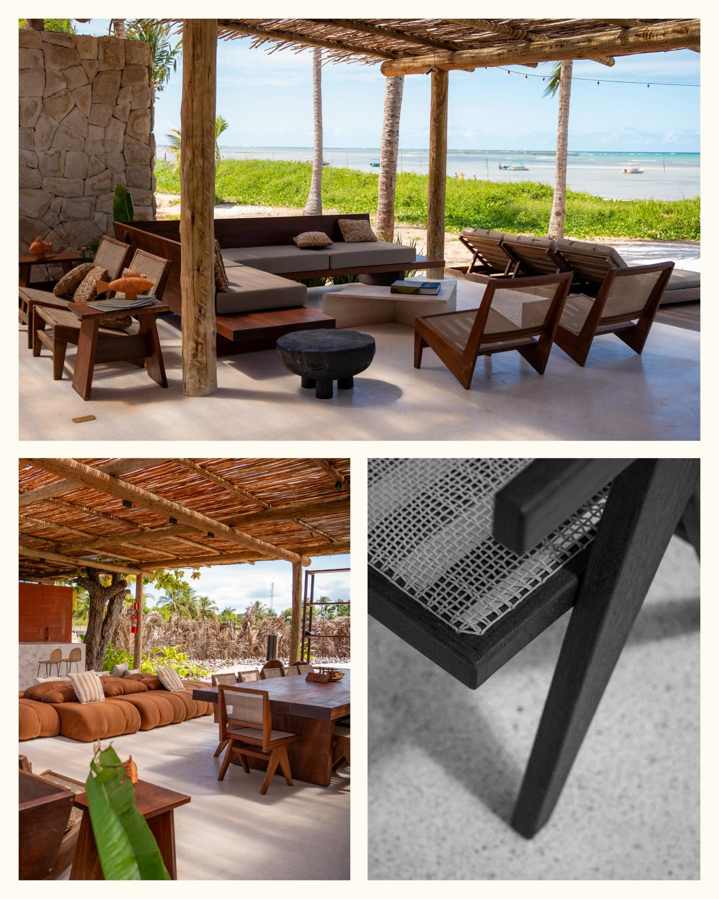
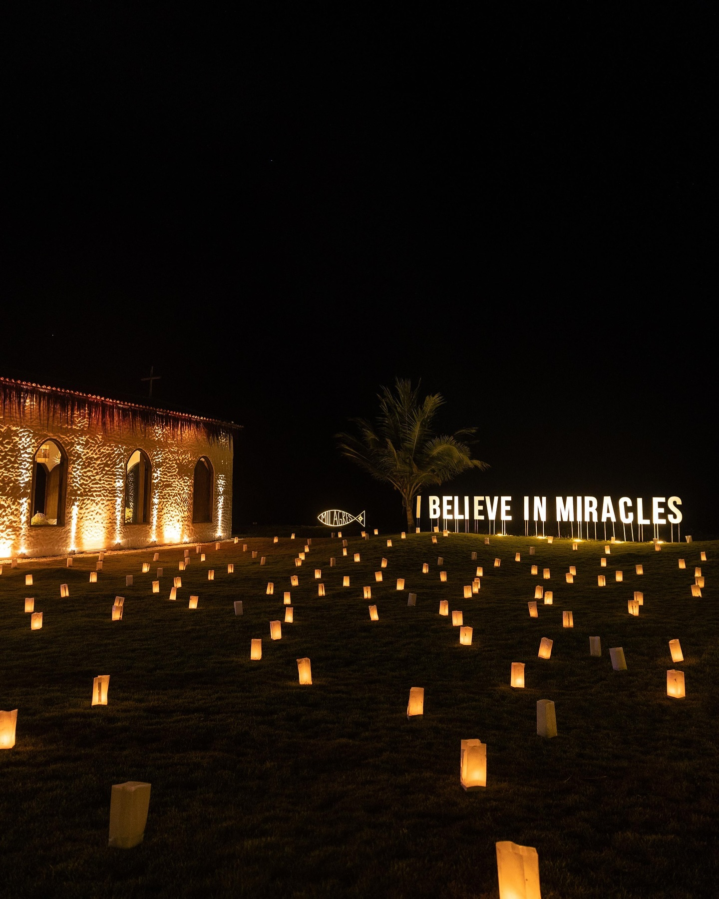
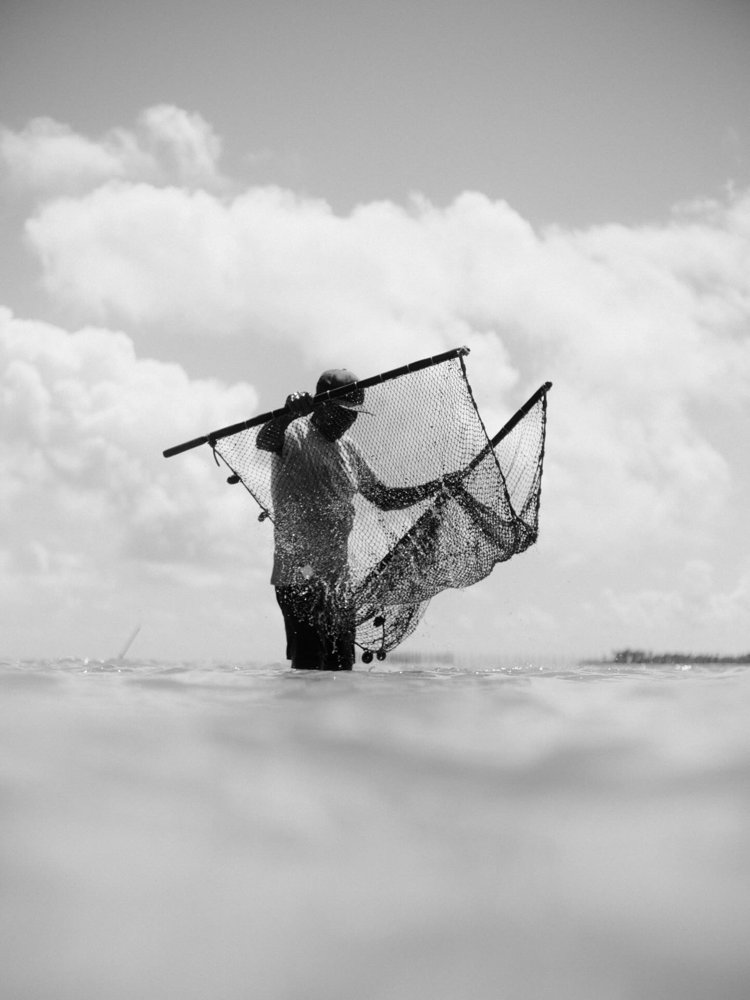
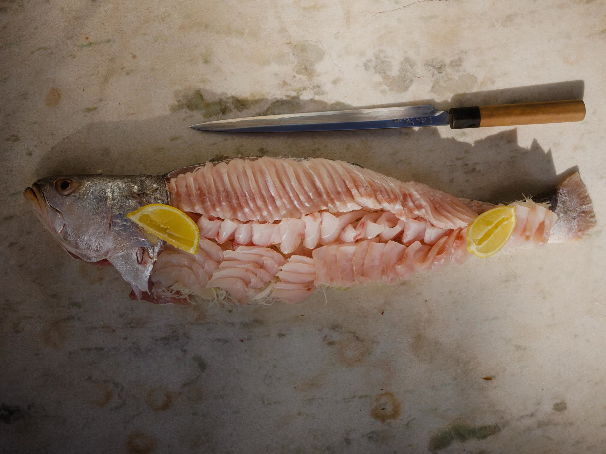
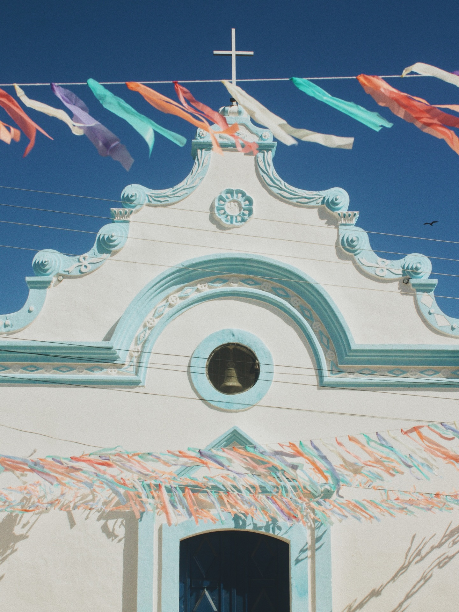

Praia do Toque · São Miguel dos Milagres · Alagoas
Milagres tem
09° 17′ S · 35° 22′ O
À beira-mar da intimista Praia do Toque.

Uma das praias mais bonitas do Brasil
Praia do Toque · São Miguel dos Milagres · Alagoas


Uma faixa de mar protegida pela segunda maior barreira de corais do mundo. Na maré baixa, o nosso mar pede licença para formar as piscinas naturais de água morna e cristalina.
Destacada pelo jornal britânico The Guardian entre as praias mais bonitas do Brasil.

A Rota Ecológica dos Milagres
O projeto
Entre o mar
e sua porta, Bossa.
O Bossa é resultado da escuta atenta ao nosso lugar. Um refúgio de alma brasileira e hospitalidade nordestina, assinado por quem escutou: Padovani Arquitetos e Agra Lemos Arquitetos, com paisagismo de Luiz Carlos Orsini.
São 43 casas em 6 tipologias diferentes e áreas de convívio baseadas na liberdade, privacidade e tempo de qualidade.
Ver as casas disponíveis-
Lago Ornamental
Desenhado por Luiz Carlos Orsini, autor dos icônicos jardins de Inhotim, o lago possui 1.800 m² de curvas sinuosas inspiradas na natureza local, além de um Deck Zen criado para momentos de contemplação.
-
Beach Club KOKO
Traduz o espírito de comunidade descomplicada e sofisticada. De um lado, as experiências à beira-mar: piscina, lounges, espaço gourmet e apoio completo para viver o mar da Praia do Toque. Do outro, um refúgio para o corpo e a mente: academia com vista mar, SPA e sauna.
-
Racket Club
Quadra de tênis, pickleball, padel e quadras de areia, para quem encontra prazer no movimento.
-
Áreas de Convívio
Entre caminhos de areia e sombras de coqueiros, o Playground Kids acolhe a infância com liberdade. Silencioso e iluminado, o Coworking inspira novas ideias. Já o Bicicletário e os Paddle lockers acompanham a rotina de quem transita com leveza entre a mata e o mar.
04As assinaturas
Quem assina
05Disponibilidade
Últimas unidades disponíveis
Enquanto o Bossa nasce,
a vivência já começou
Taipa Lounge. Entre e fique à vontade. Projeto assinado por Agra Lemos Arquitetos, é onde os proprietários do Bossa se encontram enquanto as casas sobem — com cozinha, deck e o pôr do sol na frente.
A vivência
Assinaturas do
Lounge
O espaço já está de pé, à beira-mar, feito com parceiros que traduzem a essência do Bossa.


Mobília por
Casa Ática
Móveis assinados pela renomada Casa Ática, com um colab especial que inclui peças desenhadas exclusivamente para o espaço, feitas em parceria com marceneiros locais.
Hospitalidade por
Casa Acayu
A experiência pé na areia, com serviço de praia, hospitalidade e cozinha assinados pelos parceiros da Casa Acayu.
O Drink Bossa tem o sabor do nosso estilo de vida. Uma criação autoral que combina frescor e notas tropicais, feita para celebrar à beira-mar.
Aqui milagres acontecem..
Gastronomia



Cultura

Arte
Réveillon
09Agendar
O mar fica
melhor de perto
Agende sua visita ao Bossa: deixe seu contato e a gente encontra o melhor jeito de te receber, pessoalmente, em São Miguel dos Milagres, ou por vídeo.
Prefere WhatsApp? Chamar agora
10A incorporadora
Taipa Inc
Somos uma incorporadora imobiliária comprometida em integrar a cultura local, a curadoria cuidadosa, o charme e a sustentabilidade em empreendimentos na Rota Ecológica dos Milagres.